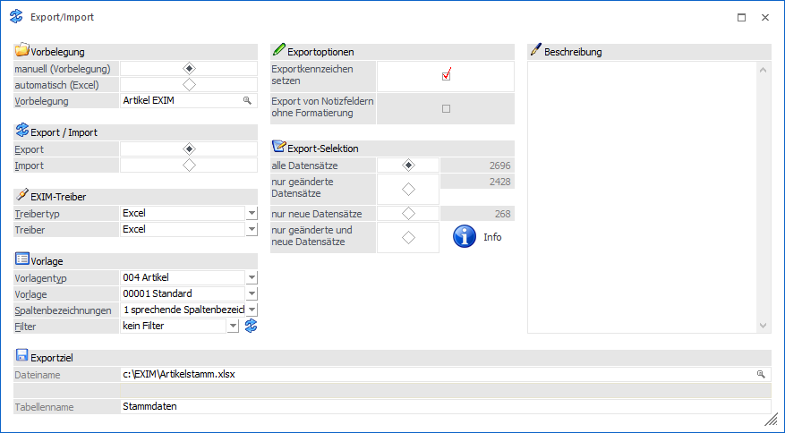
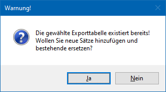
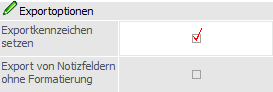
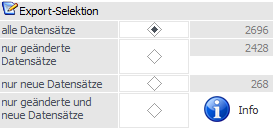
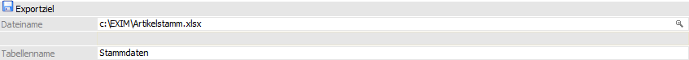
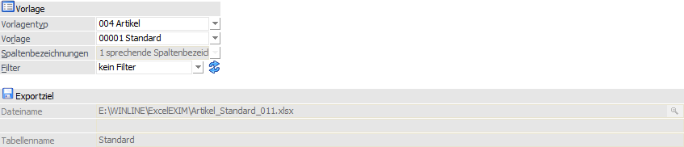
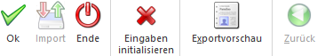

Über den Menüpunkt…
1 WinLine START
1 Vorlage
1 EXIM
… kann das Fenster Export-/Import geöffnet werden.

Vorbelegung

Ø manuell (Vorbelegung) / automatisch (Excel)
An dieser Stelle muss zunächst die Vorbelegungsvariante definiert werden, d.h. ob ein klassisches ex- bzw. importieren von Daten gewünscht ist oder ein EXIM mit direktem Editieren.
ü manuell (Vorbelegung)
Wird
"manuell (Vorbelegung)" gewählt, so stehen alle Einstellungen und Eingabefelder
des EXIMs zur Verfügung.
ü automatisch (Excel)
Mit der
Auswahl "automatisch (Excel)" können Daten gemäß des selektierten Vorlagentyps /
der Vorlage exportiert, sofort in Excel bearbeitet und Änderungen anschließend
einfach wieder importiert werden. Hierfür werden diverse Einstellungen im
Fenster fix gesetzt und ausgegraut. Daraus ergibt sich:
ü Es kann keine Vorbelegung ausgewählt werden.
ü Der Radiobutton im Bereich "Export / Import" wird auf "Export" vorbelegt.
ü Ein Beschreibungstext erläutert die Funktion dieser Vorbelegungsart.
ü Unter "Exportziel" wird automatisch ein Verzeichnispfad und Dateiname vorgegeben.
ü Bei "Export-Selektion" wird die Anzahl betroffener Datensätze angezeigt.
Hinweis
Erfolgt der Export über die Selektion "automatisch (Excel)", so wird in Folge das entsprechende Excel-Dokument geöffnet. Weiterhin wechselt der Radiobutton im Bereich "Export/Import" anschließend auf "Import".
Ø Vorbelegung
Über die Vorbelegung können die Einstellungen eines Ex- bzw. Importvorgangs gespeichert werden. Wurde bereits eine Vorbelegung definiert, kann diese durch Drücken der F9-Taste gesucht werden. Um eine Neuanlage durchzuführen, muss lediglich eine Eingabe im Feld "Vorbelegung" getätigt werden. Die Speicherung findet automatisch bei Anwahl der F5-Taste bzw. des Buttons "Ok" statt.
Hinweis
Wird mit einer bestehenden Vorbelegung gearbeitet und der Ex- bzw. Import mit Hilfe der Taste F5 bzw. des Buttons "Ok" gestartet, erfolgt eine Sicherheitsabfrage, ob mögliche Änderungen der Einstellungen in der Vorbelegung gespeichert werden sollen.

Achtung
Eine Vorbelegung kann nur geladen und verwendet werden, wenn sowohl die Berechtigung für die Vorlage als auch ggf. für einen dort hinterlegten Filter vorhanden sind.
Export / Import

Ø Export / Import
Hier wird entschieden, ob Daten importiert oder exportiert werden sollen. Um Datensätze zu exportieren, muss die Option "Export" gewählt werden.
Hinweis
Wird die Vorbelegungsvariante "automatisch (Excel)" verwendet, so wird nach einem erfolgreichen Export automatisch auf "Import" gewechselt.
EXIM-Treiber

Ø Treibertyp
Aus der Auswahlliste muss ausgewählt werden, mit welchem Treibertyp der Export durchgeführt werden soll. Hierbei stehen folgende Varianten zur Verfügung:
ü Excel
Der Export erfolgt über
eine Excel-Datei.
ü XML
Der Export erfolgt über
eine XML-Datei.
ü ODBC-Treiber
Der Export erfolgt
über einen ODBC-Treiber.
Ø Treiber
Abhängig vom Treibertyp muss hier der gewünschte Treiber gewählt werden:
ü Excel
Es steht nur der Treiber
"Excel" zur Verfügung. Hierbei handelt es sich um eine von mesonic zur Verfügung
gestellten Treibervariante.
ü XML
Bei der Ausgabe nach XML
stehen nur der Treiber "XML (Webservice)" zur Verfügung. Hierbei wird die
XML-Datei so erzeugt, dass sie in weiterer Folge auch für das WinLine WebService
verwendet werden kann.
ü ODBC-Treiber
Bei Verwendung des
Treibertyps "ODBC-Treiber" muss an dieser Stelle die Auswahl des ODBC-Treibers
erfolgen. Dieser hat eine direkte Auswirkung auf die möglichen Eingabefelder des
Bereichs "Exportziel".
Achtung
Die angebotenen ODBC-Treiber sind abhängig von der Installation des PCs, wobei alle vorhandenen 32-Bit ODBC-Treiber zur Verfügung stehen (mesonic ist für die Funktionsfähigkeit bzw. das Vorhandensein der Treiber nicht verantwortlich).
Hinweis
Je nachdem, welche ODBC-Treiber
verwendet werden bzw. welche ODBC-Treiber-Version verwendet wird, kann es zu
ungewünschten Verhalten des Exports bzw. Imports kommen, wenn Sonderzeichen im
Verzeichnisnamen oder im Datenbankname vorkommen. Aus diesem Grund wird, wenn
solche Sonderzeichen verwendet werden, eine entsprechende Hinweismeldung
ausgegeben:
Hinweis - bestehende Dateien
Wird beim Export allgemein eine
bereits bestehende Ausgabedatei bzw. -tabelle angesprochen, so werden in der
Regel neue Datensätze angehängt und identische Datensätze (d.h. z.B. dasselbe
Kundenkonto, welches schon einmal exportiert worden ist)
überschrieben.

Achtung - Treiberauswahl
Um sicherzustellen, dass Notizfelder in voller Länge exportiert werden, sollte je nach verwendetem Treiber (Excel-, Access-, Text- oder SQL-Treiber) der (letzte) englische auswählbare Treiber aus der Auswahlliste verwendet werden. D.h. ist die Auswahlmöglichkeit an Treibern der Reihenfolge nach z.B. "02 - Microsoft Access Driver (*.mdb)", "10 - Microsoft Access Treiber (*.mdb)" und "16 - Driver do Microsoft Access (*.mdb)", dann sollte in diesem Fall "02 - Microsoft Access Driver (*.mdb)" selektiert werden (d.h. der englische). Andernfalls wird das Notizfeld in der Regel nur mit 255 Zeichen exportiert.
Achtung - Textdateien
Wenn ein Export von Textdateien ausgeführt wird, so wird eine SCHEMA.INI-Datei angelegt, welche die Dateibeschreibung der Exportdatei beinhaltet.
Wenn sich die Vorlage ändert, so hat dieses keine Auswirkung auf die bereits erzeugte SCHEMA.INI-Datei und es würde die Fehlermeldung "Die Tabellen existieren bereits und haben einen anderen Aufbau als die gewählte Vorlage!" ausgegeben werden. Damit der Export wieder "normal" durchgeführt werden kann, muss dieses Dokument entsprechend angepasst oder gelöscht (und damit beim nächsten Export neu angelegt) werden. Ebenso bedarf es, dass die vorhandenen Exportdateien gelöscht werden.
Vorlage

Ø Vorlagetyp
Über den Vorlagetyp wird festgelegt, für welchen Stammdatenbereich der Export erfolgen soll.
Ø Vorlage
An dieser Stelle wird die Vorlage hinterlegt, welche für den Export verwendet werden soll.
Hinweis
Mit Hilfe der Vorlage wird definiert, welche Datenfelder in welcher Reihenfolge exportiert werden sollen. Zusätzlich können Vorbelegungen hinterlegt werden.
Ø Spaltenbezeichnungen
Hier kann ausgewählt werden, wie die Spaltenbezeichnungen behandelt werden sollen:
ü 0 - numerische
Spaltenbezeichnungen
Bei dieser Variante werden die Spalten nach den
Spaltenbezeichnungen gemäß WinLine-Datenbank (z.B. C007) benannt.
Hinweis
Wenn Daten mit numerischen Spaltenbezeichnung importiert werden sollen, dann sollte vorher ein Test-Export durchgeführt werden. So wird bekannt, wie die einzelnen Felder benannt werden müssen.
ü 1 - sprechende
Spaltenbezeichnungen
Die Exportdatei bzw. Tabelle erhält jeweils die
Spaltenbezeichnungen, die in der Vorlage definiert wurden.
Hinweis
Bei einem Import muss darauf geachtet werden, dass die erste Spalte der Bezeichnung der Vorlage entspricht, denn dort wird der Key (z. B. die Konto- oder Artikelnummer) gespeichert.
ü 2 - keine
Spaltenbezeichnungen
Bei dieser Variante, welche nur bei Verwendung des
Treibers "Excel" zur Verfügung steht, wird gar keine Spaltenüberschriftenzeile
exportiert.
Ø Filter
Durch Auswahl eines Filters kann der Export auf bestimmte Datensätze beschränkt werden (z.B. nur Kundendaten einer bestimmten Kundengruppe exportieren). In der Auswahlliste werden alle bereits angelegten Filter für den ausgewählten Stammdatentyp angezeigt.
Ø  Filter bearbeiten
Filter bearbeiten
Mit Hilfe des Buttons "Filter bearbeiten" kann ein neuer Filter kreiert bzw. ein bestehender Filter bearbeiten werden.
Exportoptionen

Ø Exportkennzeichen setzen
Ist diese Checkbox selektiert, so wird bei allen Datensätzen des Exports ein entsprechendes Kennzeichen gesetzt. Somit können beim nächsten Export nur die neuen oder veränderten Datensätze erkannt werden.
Ø Export von Notizfeldern ohne Formatierung
Wird diese Checkbox aktiviert, dann wird für enthaltene Notizfelder in der Vorlage nur der Klartext exportiert. Ist diese Checkbox nicht aktiviert, dann wird der Text inklusive RFT-Formatierungszeichen exportiert.
Hinweis
Bei Verwendung des Treibertyps "Excel" und "XML" erfolgt der Export immer in Klartext, d.h. ohne Formatierungen!
Export-Selektion

Ø Export-Selektion
An dieser Stelle kann gewählt werden, welchen Änderungsstatus die zu exportierenden Datensätze aufweisen sollen:
ü alle Datensätze
ü nur geänderte Datensätze
ü nur neue Datensätze
ü nur geänderte und neue Datensätze
Ø Info
Nach Drücken des Buttons "Info" zeigt die WinLine an, wie viele Datensätze insgesamt vorhanden, wie viele davon seit dem letzten Export neu angelegt oder verändert worden sind.
Beschreibung

Ø Beschreibung
Sobald eine Vorbelegungs-Bezeichnung eingegeben wird, wird die Eingabe in diesem Feld freigeschaltet und es kann ein bezugnehmender Text hinterlegt werden. Dieser wird mit der Vorbelegung gespeichert und beim erneuten Laden der Vorbelegung wieder mit angezeigt.
Exportziel

Ø Beschreibung von Datei bzw. Datenbank
Abhängig von der Vorbelegungsvariante wird in diese Felder das Exportziel vorbelegt oder kann hinterlegt werden.
ü automatisch (Excel)
Bei der
Wahl eines automatischen Exports ist der gesamte Bereich ausgegraut. In
Abhängigkeit der unter "Vorlage" selektierten Vorlage und des Vorlagentyps
bilden sich Dateiname und Tabellenname wie folgt:
ü Installationsverzeichnis der WinLine mit automatischer Angabe des Ordners "ExcelEXIM"
ü Information über den verwendeten Vorlagetypen
ü Information über die verwendete Vorlage
ü Information über den angemeldeten WinLine Benutzer inkl. der Dateiendung für das Excel-Format
ü Der Tabellenname innerhalb des Excel-Dokumentes bildet sich ebenso aus dem Namen der selektierten Vorlage.
Beispiel

Hinweis
Leerzeichen innerhalb der Formbezeichnung werden durch einen Unterstrich "_" ersetzt. Weiterhin werden die o. a. zusammengesetzten Elemente (Vorlagentyp, Vorlagenbezeichnung und Benutzer) durch einem Unterstrich getrennt. Jedes Eingabefeld kann bis zu 255 Zeichen beinhalten.
ü manuell (Vorbelegung)
In dem
vorhandenen Eingabefeld kann entweder über eine direkte Eingabe oder über das
Lupensymbol (alternativ über die F9-Taste) der Weg zum Exportpfad (bzw. auch
direkt zur Export-Datei) angegeben werden. Welche Hinterlegungen genau möglich
sind, hängt von dem gewählten Treibertyp und Treiber ab.
Hinweis - Excel-Treiber
Wird bei der Verwendung des Treibers / Treibertyps "Excel" in dem Eingabefeld "Dateiname" lediglich ein Dateiname inklusive der Endung angegeben, so legt die WinLine während des Exports dieses Dokument innerhalb des Installationsverzeichnisses direkt neu an und öffnet es nach erfolgreichem Durchgang von allein.
Achtung - ODBC-Treiber
Der ODBC-Treiber kann zwar innerhalb von Access-Dateien und SQL-Datenbanken Tabellen erzeugen und diese Tabellen mit Datensätzen füllen, er kann aber nicht die Access-Datei bzw. die Datenbank selbst erstellen. Diese muss bereits vorhanden sein.
Buttons

Ø Ok
Durch Anwahl des Buttons "Ok" bzw. der Taste F5 wird der Export durchgeführt.
Ø Import (nur bei Importvorschau)
Mit Hilfe des Buttons "Import" im Prüfbereich (siehe auch Option "Sätze vor Import editieren") wird der Import durchgeführt.
Ø Ende
Durch Drücken des Buttons "Ende" bzw. der Taste ESC wird das Fenster geschlossen, alle Einstellungen verworfen und kein Export durchgeführt.
Ø Eingaben initialisieren
Durch Anklicken dieses Buttons werden alle getätigten Export-Einstellungen verworfen, wodurch eine neue Selektion durchgeführt werden kann.
Ø Exportvorschau
Durch Drücken des Buttons "Exportvorschau" werden in einem neuen Fenster die Datensätze, welche auf Grund der vorgenommenen Einstellungen exportiert werden würden, angezeigt.
Hinweis
Eine Bearbeitung der Datensätze ist nicht möglich.
Ø Zurück
Befindet man sich in der Exportvorschau oder der Importvorschau, so kann durch Anwahl des Buttons "Zurück" wieder in das Hauptfenster des EXIMs zurückgewechselt werden.